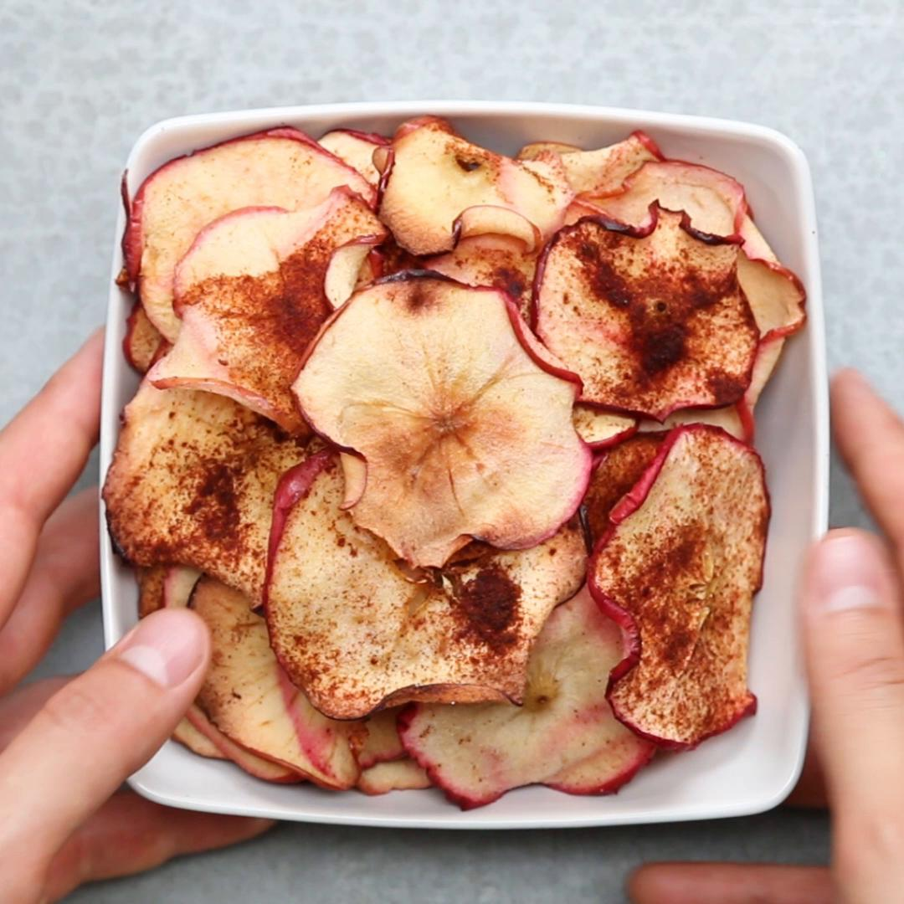

|  |
|---|
Ingredients
1 c. whole milk greek yogurt
1/4 c. mayonnaise
2 tsp. fresh lemon juice
1 tsp. garlic powder
1 tsp. onion powder
1 tsp. Worcestershire sauce
Kosher salt
Freshly ground black pepper
Crackers, for serving
Bread, for serving
Assorted crudite, for serving
Directions
Step 1
Mix all ingredients in a medium bowl and season with salt and pepper. Chill until ready to serve.
Step 2
Top with more black pepper and serve with crackers, bread, and crudite.